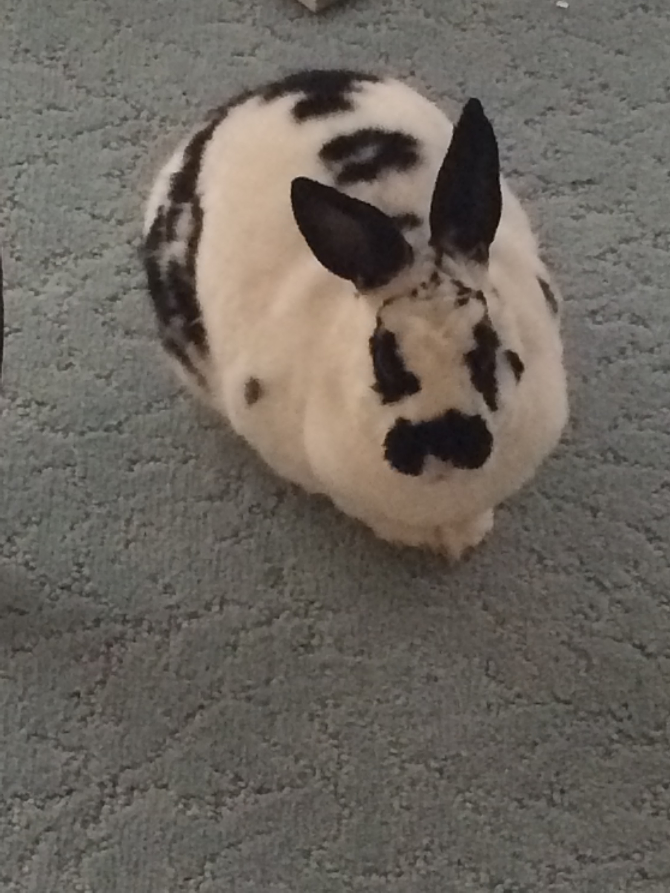

Rabbits are a

Image is mine.
What are some of the different rabbit breeds? Below is a chart that lists some of the most popular ones, along with a few distinguishing characteristics.
| Breed name | Fur type | Average weight | Interesting fact |
|---|---|---|---|
| Rex rabbit | Rex | 8-9 pounds | "Guard" hair in fur is much shorter than average rabbit's, creating a plush, remarkably soft coat |
| Mini Rex | Rex | 3-4 and a half pounds | Its compact size and plush fur make it an extremely popular pick for pet owners |
| Holland Lop | Rollback | 3-4 pounds | "Lop" refers to floppy--i.e. don't stick up--ears in rabbits |
| Dutch | Flyback | 4-5 pounds | Distinguished by two-toned color blocking of fur |
| Dwarf Hotot | Flyback | No more than 3 pounds | Distinguished by black coloring around eyes |
| Netherland Dwarf | Rollback | 2-2 and a half pounds | Similar to Holland Lop except for upright ears |
| Information from Rabbit Breeders and RabbitBreeds.org | |||